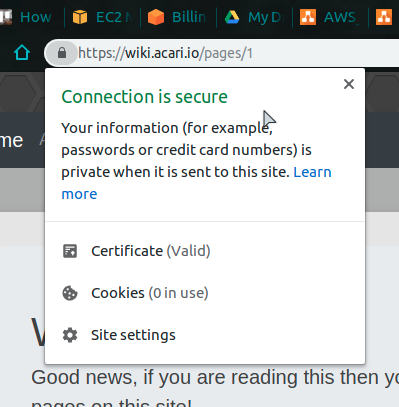

The Frugal AWS Developer
How to go to production on a budget
Presented by Alex Simons
What's in it for you?
How to mimic a production like environment locally.
How to deploy production systems without OpenShift.
Get basic working knowledge AWS and some DevOps techniques.
How to minimize the amount of costs you will be responsible to pay.
What is Production like?
It's great, you should try it sometime!
A good production environment has these characteristics:
Secure Network Traffic
Your application is accessible from HTTPS.
Any HTTP URL is redirected to HTTPS.
eg `http://google.com` becomes `https://google.com`Your certificates are Valid and Trusted.
Now for somethings you do not want
Just HTTP
._.
Invalid Certificates 😱
The could be expired or for the incorrect domain
You Really do not want this either!
I'll cover to avoid both of these at no cost to you!
Next Production Characteristic
Sub-Domain Support
Things like google.com are the main domain
While there are also other sites tied under the same domain Such as docs.google.com and drive.google.comhttps://google.com:3000/index.html
Have you ever really done anything this before, like ever?
Then why is it you always see things like these when developing: localhost:3000 or localhost:8080??
How do I not do this?
Well if you already have this down then good for you!
However, if you do not know, most websites that run on HTTP default to port 80 (eg http://localhost:80 and http://localhost are the same).
The same applies for HTTPS and port 443
I'll cover the whole port 3000 and 8080, in a bit.
Next Prod Characteristic
Graceful error handling
No body likes this
Make it something fun!
Be sure to address maintenance windows
Next Prod Characteristic
Respond quickly
- Succeed Immediately
- Fail Fast
Last (not final) attribute of Prod
Path Support
What does this mean?
If I was to put a url into the browser address then, I expect to take me to the content that I was viewing at the time.
If I put
https://learn.acari.io/reactive/explanations/why
into my browser address, it better take me to the page that I was viewing when I copied that url.
So how do I do all of that stuff?

How you really should start.
- Organize all of your projects.
- Install Docker on your local machine
- Acquire AWS Account
- Combine the above
- Profit!
Organize your projects
Group them by category
- Static Content
- Web Services
Static Content
Just a simple html based application that may or may not have a corresponding backed/REST API
Web Services
Projects that run servers and normally are accessed from localhost:8080 or something like that.
These may or may not serve static content as well
The distinction between these two categories is the amount of $$ you will spend
Fragments
Hit the next arrow...
... to step through ...
... a fragmented slide.
Fragment Styles
There's different types of fragments, like:
grow
shrink
fade-out
fade-up (also down, left and right!)
current-visible
Highlight red blue green
Transition Styles
You can select from different transitions, like:
None -
Fade -
Slide -
Convex -
Concave -
Zoom
Themes
reveal.js comes with a few themes built in:
Black
(default) -
White
-
League
-
Sky
-
Beige
-
Simple
Serif
-
Blood
-
Night
-
Moon
-
Solarized
Slide Backgrounds
Set data-background="#dddddd" on a slide to change the background color. All CSS
color formats are supported.
Image Backgrounds
<section data-background="image.png">Tiled Backgrounds
<section data-background="image.png" data-background-repeat="repeat" data-background-size="100px">Video Backgrounds
<section data-background-video="video.mp4,video.webm">... and GIFs!
Background Transitions
Different background transitions are available via the backgroundTransition option. This one's called "zoom".
Reveal.configure({ backgroundTransition: 'zoom' })Background Transitions
You can override background transitions per-slide.
<section data-background-transition="zoom">Pretty Code
function linkify( selector ) {
if( supports3DTransforms ) {
var nodes = document.querySelectorAll( selector );
for( var i = 0, len = nodes.length; i < len; i++ ) {
var node = nodes[i];
if( !node.className ) {
node.className += ' roll';
}
}
}
}
Code syntax highlighting courtesy of highlight.js.
Marvelous List
- No order here
- Or here
- Or here
- Or here
Fantastic Ordered List
- One is smaller than...
- Two is smaller than...
- Three!
Tabular Tables
| Item | Value | Quantity |
|---|---|---|
| Apples | $1 | 7 |
| Lemonade | $2 | 18 |
| Bread | $3 | 2 |
Clever Quotes
These guys come in two forms, inline: The
nice thing about standards is that there are so many to choose from
and block:
“For years there has been a theory that millions of monkeys typing at random on millions of typewriters would reproduce the entire works of Shakespeare. The Internet has proven this theory to be untrue.”
Intergalactic Interconnections
You can link between slides internally, like this.
Speaker View
There's a speaker view. It includes a timer, preview of the upcoming slide as well as your speaker notes.
Press the S key to try it out.
Export to PDF
Presentations can be exported to PDF, here's an example:
Global State
Set data-state="something" on a slide and "something"
will be added as a class to the document element when the slide is open. This lets you
apply broader style changes, like switching the page background.
State Events
Additionally custom events can be triggered on a per slide basis by binding to the
data-state name.
Reveal.addEventListener( 'customevent', function() {
console.log( '"customevent" has fired' );
} );
Take a Moment
Press B or . on your keyboard to pause the presentation. This is helpful when you're on stage and want to take distracting slides off the screen.
Much more
- Right-to-left support
- Extensive JavaScript API
- Auto-progression
- Parallax backgrounds
- Custom keyboard bindings